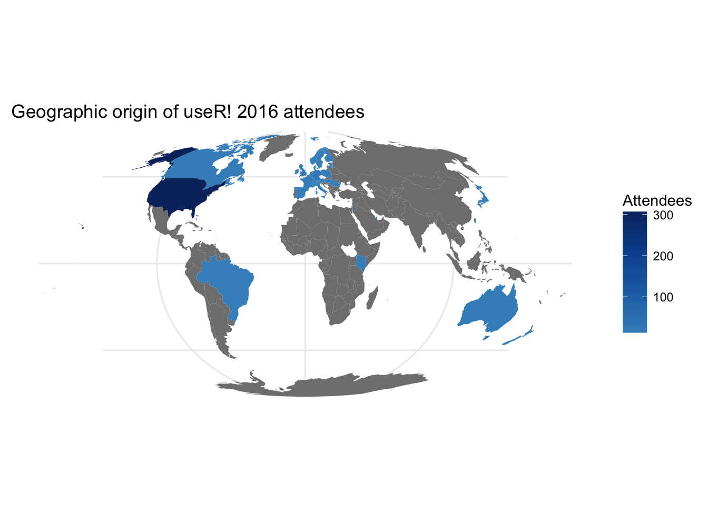

Every year, hundreds of R programmers descend on a host city and spend three or four days sharing work, collaborating on projects and making new contacts - the useR! conference, this year held in Stanford, CA. useR! offers a wonderful opportunity to map a subset of the language’s most active users and the Women in R Task Force took this opportunity to survey attendees and find out their backgrounds, experiences and interests, in the hope that it will help us to get a better understanding of how to make the R community a more inclusive environment.
Our survey received 455 responses, out of 899 attendees, and appears to represent the attendees pretty accurately.1 In this blog post, we’ll step through the attendees’ demographic background, how that represents the wider scientific and computing communities (and wider world), and propose recommendations for ways to bring these demographics towards parity.
Summary
Survey responses showed that attendees were largely male and white, with Latinx, Native American and people of African descent particularly under-represented. Attendees were almost all employed, and what’s more, employed in a permanent, full-time job. Attendence skewed heavily towards people in their late 20s and early to mid 30s, with men tending to be older than women, and attendees largely coming from the United States and almost exclusively from North American and Western European countries.
Our recommendations are that, going forward, useR! conferences set aside tickets and funding for under-represented groups, and put resources into facilities such as feeding rooms and childcare that would benefit caregivers with small children, many of whom are women. Additionally, the Task Force itself will be refocusing its efforts and mission to emphasise the intersectional nature of marginalisation that women face, in line with the dispiriting results around race, employment and educational attainment. We will also be running further surveys to build up a better idea of the “ground truth” of the R community, and to track improvements and suggestions on an ongoing basis.
Survey results
Gender and race
The gender breakdown of responses (n=453) showed that approximately 33% of attendees identified as women, with the majority of the remainder identifying as men and a small number identifying outside the gender binary.
While the inclusion of women is not as bad as at other conferences, it’s also definitely lower than it could be given that there are many scientific fields - such as biology, which R is particularly commonly used in - where women outnumber men in terms of degree attainment.2 At the same time, some of this may be offset by the location and chosen topics for presentations, which were more focused on visualisation or computing than biostatistics.
Race is more complicated, because there’s more variation in the answers - as intended! Both race and gender questions were offered as a free text field to avoid restricting respondents to false dichotomies. One side-effect, though, is that it’s hard to aggregate the data. What we can say, though, is:
- 74% of respondents identified as White or Caucasian;
- 16% fell within the US Federal guidelines for ‘Asian’, or identified directly as Asian;
- 3% identified as Hispanic or Latinx;
- 1% identified as people of African descent;
- 0.5% identified as Native American or Pacific Islander;
- 0.25% identified as Middle Eastern and
- 3% identified as mixed-race.
In comparison, a survey of STEM workers in the United States found 6% were Black and 7% Hispanic3 4 - and the overall demographics of the United States point even more clearly to an under-representation of non-Asian minority groups.5 The response rate was somewhat lower on this question (n = 409), perhaps due to concerns about identifiability. Nonetheless, there’s clearly work to be done.
LGBT
5% of respondents identified as Lesbian, Gay, Bisexual or Transgender. How this maps to overall industry, academic and population trends is hard to identify, because the long history of persecution of LGBT individuals and the often confusing and ill-defined nature of identity means that the proportion of LGBT individuals is regularly under-reported. Attempts to control for that under-reporting have shown up to 19% of the U.S. population experience same-sex attraction,6 although more traditional methodologies suggest around 11%.7
It’s possible that the useR! survey is one of the surveys in which under-reporting is found - although 447 responses were received, which suggests people at least didn’t skip it - but it’s probably fair to say that such a sizeable difference in outcome is going to contain some genuine differences in population, as well as methodological variation.
Additionally, it is probable that the other demographics of LGBT attendees reflect the overall demographics of attendees, meaning that (for example) we would expect to find lesbians or bisexual women under-represented in that 5%.
Age
Approximating age (by subtracting the year of birth from 2016) shows the following:

Women trend younger than men at the conference, but the age distribution is similar across the two genders; 47% of respondents (n = 438) were born in the 1980s - in other words, were people in their late 20s to mid 30s. This lines up neatly with the education data (more on that later) and suggests that people in their early 20s and 40+ year olds are not finding the conference appealing - because there are other things to spend time on, because money is tighter, or for some other reason.
The women-being-younger element suggests that the rise in women attending (compared to 2015, where the proportion of women was only 19%) represents younger or newer members of the community attending, too.
Geography
The R community is a highly international one, with developers in a wide range of countries. One of the things we were interested to discover is how this comes out in the attendee mix at useR!. Accordingly, we asked attendees which country they currently resided in.
Altogether, R programmers from 34 nations attended useR!, but the overwhelming majority of respondents (71% of n = 443) live in the United States. In some ways this isn’t surprising - the cost of getting to Stanford increases the further away you are, and it’s expensive to start with! - and the rotation of the conference between continents each year means that many non-US R programmers are likely to simply attend the next European event. At the same time, it’s still somewhat disappointing for an event considered the “main” R conference, particularly with only ~20 attendees coming from Canada, a country bordering the U.S.

Education
The vast majority of attendees (>85%, of n = 451) had completed postgraduate degrees:
| Highest Qualification Completed | Women (%) | Men (%) |
|---|---|---|
| Professional degree or certification | 1.2 | 2.8 |
| Doctorate | 41.7 | 45.7 |
| Masters degree | 42.9 | 40.4 |
| Undergraduate degree | 13.7 | 10.3 |
| High school/Secondary school or lower | 0.6 | 0.7 |
This further suggests, on top of the data around age, that the conference is not attracting younger and more-early-career R programmers and researchers. Part of this may simply be that spending money on an R conference may be a lot easier to justify when you’re in full-time employment, or in a postgraduate degree with a stipend, than as an undergraduate or masters student; part of it is probably also that people without degrees, or without postgraduate degrees, earn less money and may come from poorer backgrounds, extending the problem.
At the same time, it is worth noting that the concept of research conferences as places to attend is not something particularly pushed on undergraduates, and so there is a component of awareness as well as finance. Finally, it may simply be that the conference is very academia-oriented, and so is particularly attractive to academics (and those familiar with academia) rather than R programmers without an academic background.
As the age data suggests, women tend to be slightly earlier on in the traditional academic career path.
Professional environment
Almost all of the attendees were employed, which (with the cost of the tickets) makes sense. More interestingly, a majority of the attendees (~57% of n = 444) were employed outside academia, primarily by private sector organisations. This is a strong indicator of what we’ve known anecdotally for a while - that R, a language originally designed and used in academia, is becoming more prevalent outside that context. At the same time, this may be a (somewhat) localised effect: while the language is increasingly popular, the technology industry centred on Silicon Valley is certainly an outlier in many respects for research overall.

Another interesting takeaway was that men are more likely to work in industry and permanent academic jobs than women - and women are far, far more likely to be students. Again, this isn’t surprising since it fits the pattern that women attending tend to be younger than men, and overall patterns that the tech industry (which is where one would expect the majority of privately-employed R programmers and scientists to work) has a known problem with employing and promoting women, as does academia.
Almost all attendees work full-time. It’s difficult to tell if this is due to the wider community largely being employed or engaged in full-time activities, or due to the cost of attendance diminishing the ability of community members in more economically fragile situations such as part-time work or unemployment to attend. Female attendees were less likely to work part-time, and far more likely to identify their status as unemployed (although the sample size is too small to really draw conclusions):
| Employment Status | Women (%) | Men (%) |
|---|---|---|
| Full-time | 92.2 | 94.3 |
| Part-time | 1.8 | 4.3 |
| I am not currently employed | 6.0 | 1.4 |
The proportion identifying as unemployed is greater than the proportion that previously identified as unemployed or retired, which could indicate that some students are categorising themselves as ‘not in employment’ when not presented with an option that reflects student-status.
Caregiving
Approximately a quarter of respondents answered “yes” to the question “are you a caregiver for children or adult dependents on a regular basis?” (n = 445). More men than women identified as caregivers. This either indicates that R programmers are a singularly socially enlightened population, or reflects wider sociological conditioning around caregiving which makes it easier for men to leave children at home with their partner (if applicable) than for women to do the same - resulting in a self-selection effect in which women with children are less likely to be able to attend (and so women who do attend are less likely to have children they care for).
Qualitative data suggests, unsurprisingly, the latter - in the free-text field for the survey, several (female) respondents mentioned the difficulty of persuading their (male) partners to handle childcare to allow them to attend conferences.
| Caregiving Status | Women (%) | Men (%) |
|---|---|---|
| No | 78.3 | 71.2 |
| Yes | 21.7 | 28.8 |
Recommendations
Conference proposals
The survey data surfaces a lot of problems that can be tackled directly by future useR! conferences, and other conferences in the field too. In particular, it shows that while the gender breakdown of the conference is not as bad as we might fear, it’s still lagging behind the general population of the scientific fields R programming draws from, as well as the population as a whole. In addition, and in some ways more worryingly, attendees are overwhelmingly white, with Native Americans, Latinx people and people of African descent particularly under-represented.
These problems won’t be solved overnight, but there are several things the conference can do that would make attending a more viable and enjoyable prospect for under-represented groups. These include:
- A wider scholarship system. useR! 2016 featured scholarships, helping pay for things like plane tickets or hotels for people from marginalised backgrounds who wished to attend. The committee tasked with allotting the money did excellent work, but the money available was small. Expanding the scholarship fund in future conferences would let more under-represented R programmers attend, going a long way towards making a more representative conference.
- Childcare and feeding support. One of the things we saw in qualitative data, and something the quantitative data points to, is that the difficulties of juggling childcare is a blocker on attendance, particularly for women. Providing subsidised or free childcare at the conference itself (along with breastfeeding rooms), and incorporating childcare into the scholarship system, would help with this, and has been successfully done elsewhere.8
- Staggered ticket release. useR! 2016 sold out incredibly quickly, with all of the tickets gone within a day. This made it difficult for people to attend if they weren’t extremely on the ball and able to decide, on or before the first registration day, that they wanted to attend. By definition this hurts marginalised people because it hurts people who, for financial reasons, need to put some energy behind working out if they can attend. One solution worth considering is staggering the release of tickets over several days or weeks - perhaps with a waiting or notification list. This offers potential attendees multiple opportunities, reducing the penalty paid for not being ready to go on day 1.
- A more precise code of conduct. Following an open letter in 2015 the R Foundation adopted a resolution that any Foundation-affiliated conference have a Code of Conduct,9 which we applaud. What that code contains, however, in terms of restrictions, the amount of information given to attendees, and the enforcement mechanisms and their ease of use, is largely left up to the individual conference instance. This creates inconsistency and uncertainty for both attendees and conference organisers. Selecting a specific code of conduct, with a specific enforcement mechanism, along with training for enforcers, would solve for much of this, and give concerned attendees more certainty that the conference is a safe place to be.
Task Force proposals
This survey has also helped to shape the goals of the Task Force on Women in the R Community. In particular, focusing in women, as a catchall, is not enough. Issues such as race, sexuality, disability and class intersect with gender and must also be considered if we are to build an R community that is more representative of the scientific/software communities and of society as a whole.
Accordingly we are rebranding the Task Force as simply Forwards, so that we can consider the needs of other marginalised groups as part of our mission. Our primary focus will still be on women as there remains much work to do here and broadening participation of women was the motivation for setting up the task force. However many of the practical actions we can take, such as the proposals above, will also impact other marginalised groups and making this impact a formal part of our mission will help to ensure our actions do not only benefit white, highly educated women.
As an immediate consequence, we will be publishing an open call for participation, seeking more members for the group. We are particularly interested in talking to volunteers from non-White, LGBT, non-middle-class or early career backgrounds.
Running this survey has also served to reinforce that we have no fundamental ground truth here; it is hard to see what the backgrounds of those who try but fail to attend useR are, and their reasons for not going - it is hard to see what the demographics of R community members overall look like. Accordingly we will be running further surveys, adjusting several questions to factor in things we’ve learned from running this one, looking at the overall community and useR! attendees in a more nuanced way.
Notes
If your company would like to sponsor diversity scholarships or childcare at useR! 2017, please contact the chair of the local organizing committee, Tobias Verbeke.
We do not plan to release the raw survey data as many individuals can be uniquely identified from one or two demographic questions. We may release the data in an aggregated form once we have completed our full analysis (this post covers the first of three sections).
The analysis presented here used the following packages:
- For data manipulation: dplyr, forcats, maptools, matrixStats, tidyr
- For visualisaton and reporting: knitr, ggplot2, mapproj, RColorBrewer, rworldmap, scales
The code is available in the Rmarkdown file.
See our supplementary report Non-Responses in the UseR! 2016 Survey↩
National Science Foundation (2013) Women, Minorities, and Persons with Disabilities in Science and Engineering↩
Landivar (2013) Disparities in STEM Employment by Sex, Race, and Hispanic Origin↩
Native Americans are technically overrepresented, but given we’re talking about single digits of attendees here that probably isn’t meaningful - see CEOSE (2012) Biennial Report to Congress↩
Coffman (2013) The Size of the LGBT Population and the Magnitude of Anti-Gay Sentiment are Substantially Underestimated↩
Gates (2011) http://williamsinstitute.law.ucla.edu/research/census-lgbt-demographics-studies/how-many-people-are-lesbian-gay-bisexual-and-transgender/↩
Brown (2014) PyCon 2014: Community, community, community. Also, childcare.↩
R Foundation (2015) https://www.r-project.org/behaviour.html↩